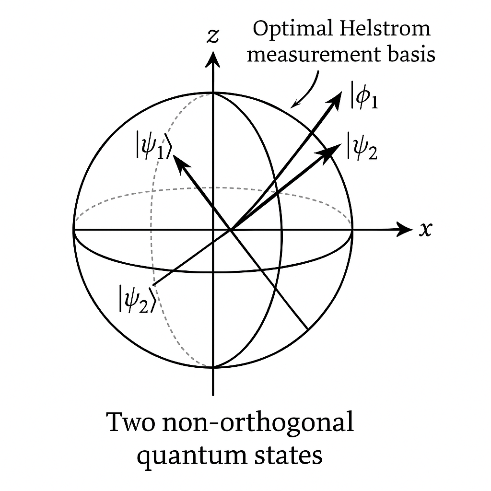
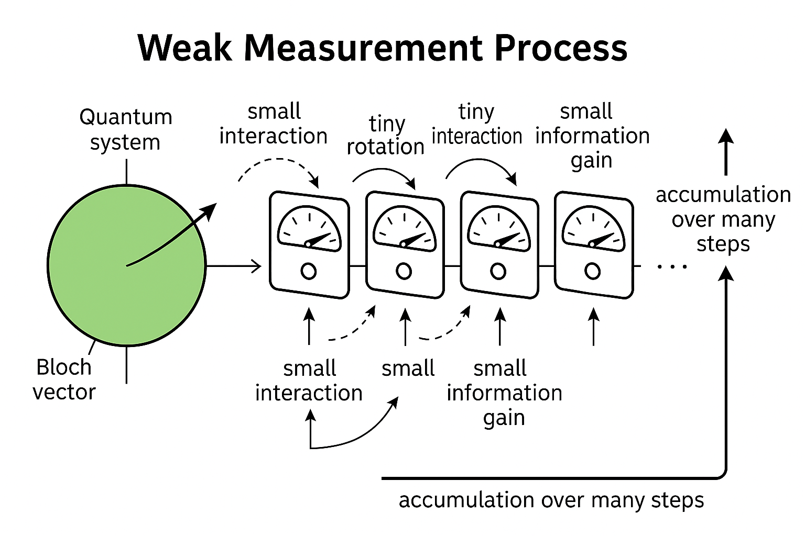
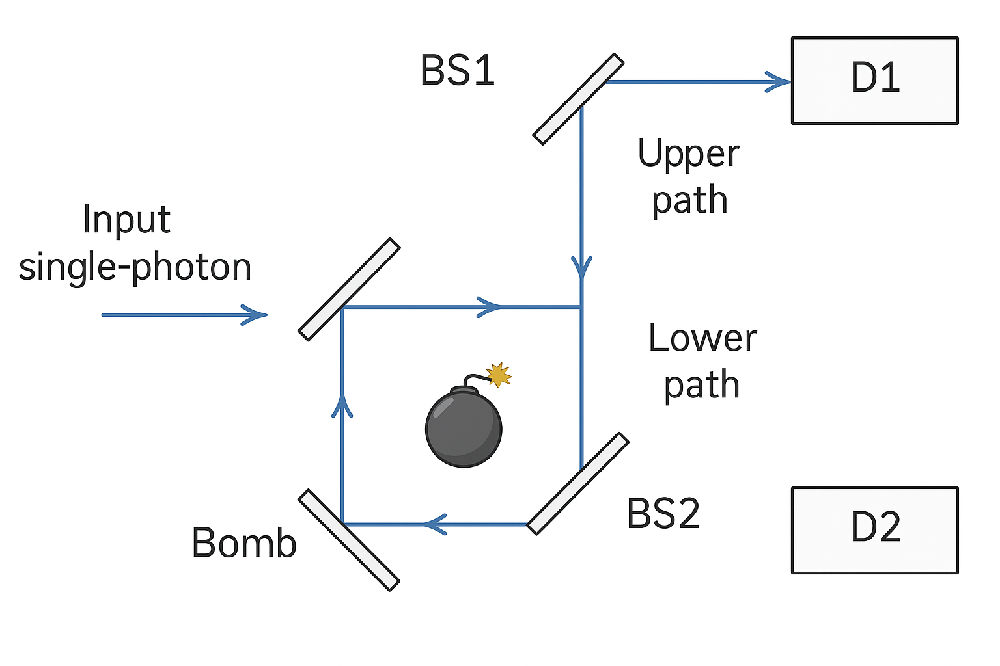
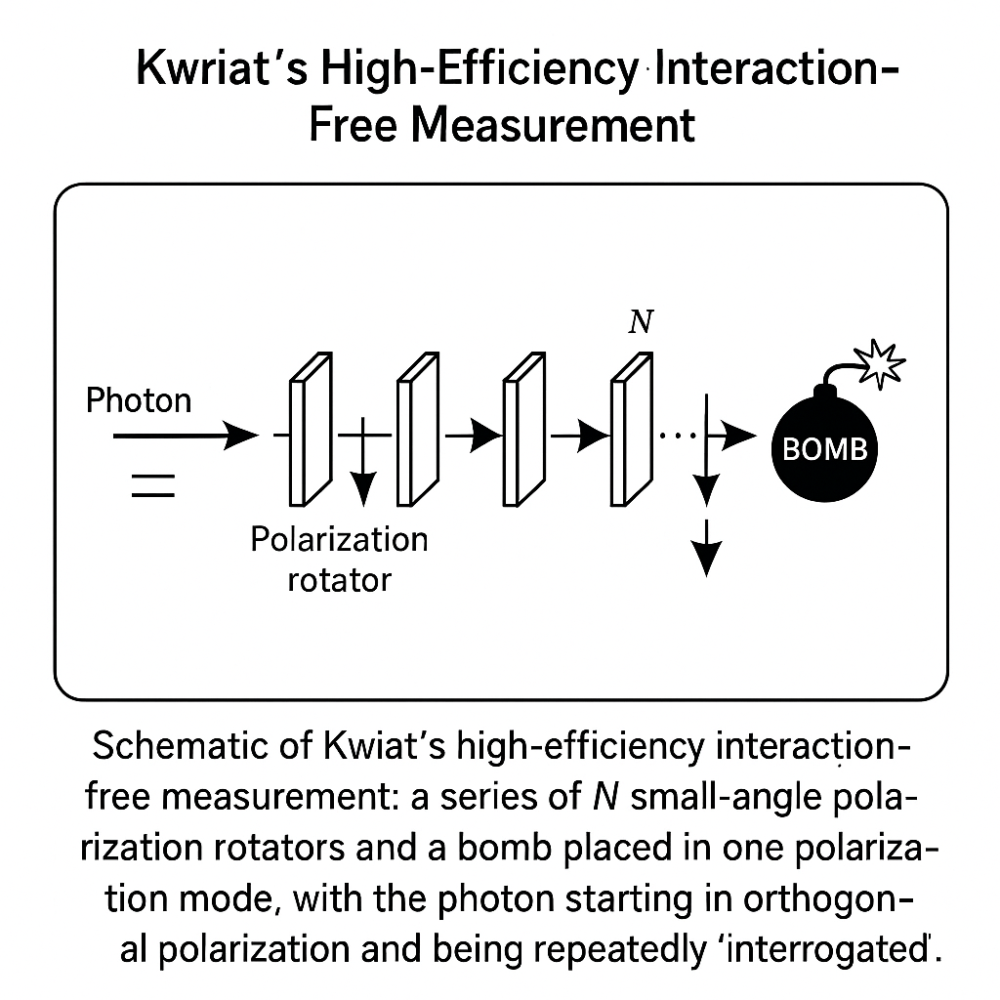
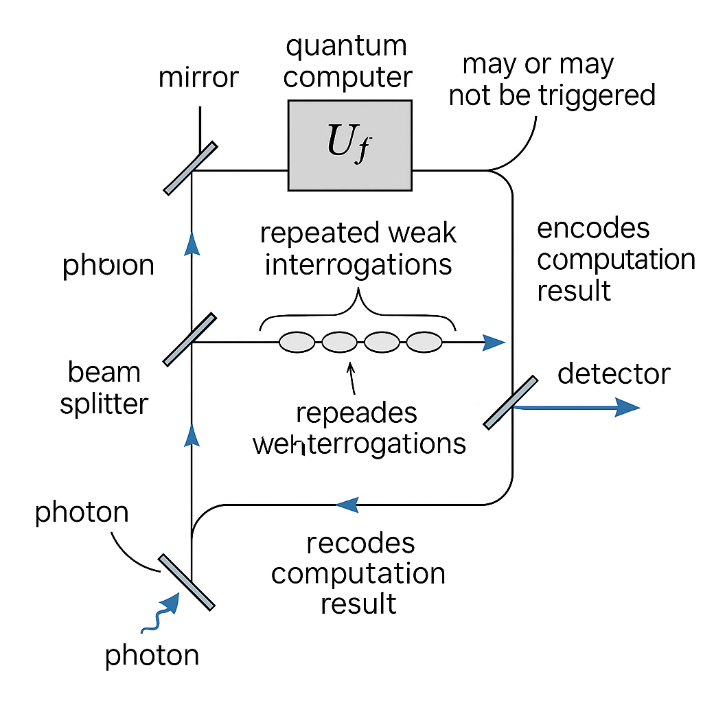
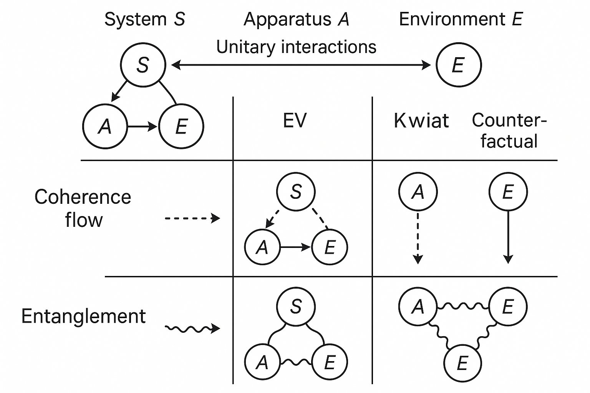
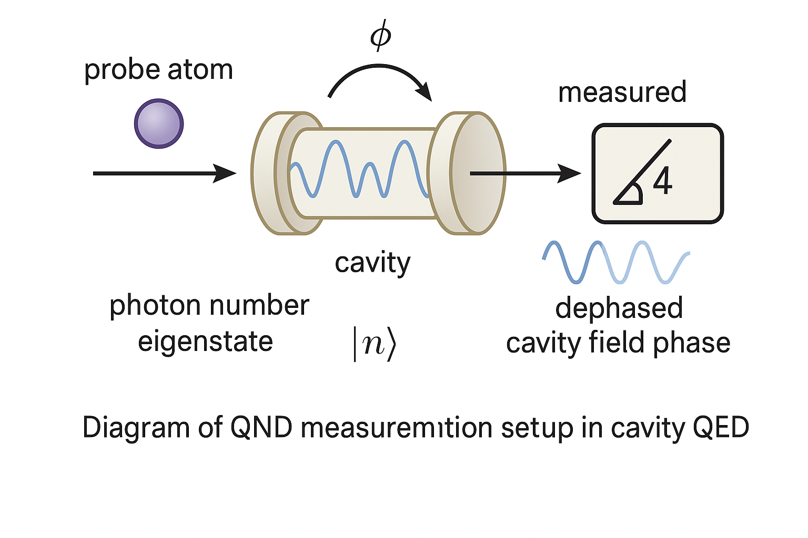

Generated by ChatGPT on 2025-12-16
逐字稿下載：ChatGPT_zh_L04_第_4_講_Decoherence主題_4.txt
完整音檔：
Segment 1:
Segment 2:
Segment 3:
Segment 4:
Segment 5:
Segment 6:
Segment 7:
Segment 8:
Segment 9:
Segment 10:
Segment 11:
Segment 12:
Segment 13:
本講聚焦於量子測量理論中兩個看似衝突、實則深度關聯的主題：
本講將把這兩者放在退相干機制與量子測量背後的量子通道框架下統一理解，並在數學上給出嚴謹刻畫。
從量子資訊的觀點，我們典型的量子測量模型如下：
測量過程： \[ \rho_S \otimes \lvert 0 \rangle\langle 0 \rvert \;\xrightarrow{U}\; \rho_{SE}' = U(\rho_S \otimes \lvert 0 \rangle\langle 0 \rvert)U^\dagger. \]
然後對環境（或測量儀器）做某個 POVM \(k\)，也就是一整族的 \(M_k\)。-->\(\{M_k\}\)，得到經典結果 \(k\)，並同時改變系統狀態。對於系統而言，這誘導出某個量子操作（CPTP map）： \[ \mathcal{E} : \rho_S \mapsto \sum_k K_k \rho_S K_k^\dagger, \] 其中 \(\{K_k\}\) 是 Kraus operators，滿足 \[ \sum_k K_k^\dagger K_k = I. \]
核心問題：我們想要從 \(S\) 身上讀出多少資訊（關於某組可能的輸入態），同時又不希望把 \(S\) 擾動太多。
在退相干語言中，擾動最重要的一種型式就是相干性（off-diagonal 元）被消除：從純態變成混合態。資訊獲取越多（特別是對某一基底上可區分度越高），退相干通常就越強烈。
欲定量「information gain」，典型做法是假設系統的輸入狀態來自一組集合 \(\{\rho_x\}\)（帶機率分布 \(p_x\)），然後根據測量結果 \(k\) 去推斷 \(x\)。測量 \(k\)，也就是一整族的 \(M_k\)。-->\(\{M_k\}\) 導致聯合機率： \[ p(x, k) = p_x \,\mathrm{Tr}[\rho_x M_k], \] 其中 \(M_k \ge 0, \sum_k M_k = I\)。
常用的資訊度量包括：
而「disturbance」則有多種量法：
Information-gain–disturbance tradeoff 的各種結果，基本上就是連接「互資訊／可辨識度」與「trace distance／fidelity／退相干係數 \(\eta_{ij}\)」之間的不可避免的下界／上界關係。
考慮最經典的設定：二態辨識問題。系統可能處於兩個已知純態： \[ \lvert\psi_0\rangle, \quad \lvert\psi_1\rangle, \] 機率分別為 \(p_0, p_1\)。內積： \[ c := \lvert \langle \psi_0 \vert \psi_1 \rangle \rvert \in [0,1). \]
若要最小化平均錯誤機率 \(P_e\)，Helstrom 給出最優 POVM。最小錯誤機率為 \[ P_e^{\min} = \frac{1}{2}\left(1 - \|\Delta\|_1\right), \quad \Delta := p_0 \lvert\psi_0\rangle\langle\psi_0\rvert - p_1\lvert\psi_1\rangle\langle\psi_1\rvert. \] 對稱情形 \(p_0=p_1=\tfrac{1}{2}\) 時， \[ P_e^{\min} = \frac{1}{2}\left(1 - \sqrt{1 - c^2}\right). \]
要達成這最佳辨識度，勢必要在某基底上對 \(\lvert\psi_0\rangle\)、\(\lvert\psi_1\rangle\) 做強烈測量；該測量在此基底上幾乎就是「投影測量」，將系統完全坍縮到與這兩態最佳區分的正交向量。這對任何與此基底不對易的其他可觀測量而言，皆造成相當大擾動。
因此，高辨識度 \(\Rightarrow\) 強測量 \(\Rightarrow\) 大擾動／大退相干。這是最簡單的直觀示例。

對於兩個量子態 \(\rho_0, \rho_1\)，它們的可辨識度由 trace distance \[ D(\rho_0,\rho_1) = \tfrac{1}{2}\|\rho_0-\rho_1\|_1 \] 所表徵。給定一個測量（POVM）\(k\)，也就是一整族的 \(M_k\)。-->\(\{M_k\}\)，可得到對應的古典分布 \[ p_k^{(i)} = \mathrm{Tr}[\rho_i M_k], \quad i=0,1. \] 以此定義古典總變差距離 \[ D_{\mathrm{cl}}(p^{(0)}, p^{(1)}) = \tfrac{1}{2} \sum_k \left| p_k^{(0)} - p_k^{(1)} \right|. \]
可證明： \[ D_{\mathrm{cl}}(p^{(0)}, p^{(1)}) \le D(\rho_0,\rho_1). \] 這是量子到古典通道的「收縮性」：測量不會放大態間距離。
另一方面，若我們固定測量策略 \(k\)，也就是一整族的 \(M_k\)。-->\(\{M_k\}\)，讓測量結果給出「最大資訊」，那麼該測量 induced 的量子操作 \(\mathcal{E}\) 必定也將系統態「推向」某些基底的經典化——在某種意義上，\(\mathcal{E}\) 對於那兩個輸入態 \(\rho_0,\rho_1\) 的距離通常不會減少太多。這背後可用 data processing inequality 和各種 monotone metrics 來刻畫。
Fuchs 與 Peres 等人在 1990s 提出一系列關於 information–disturbance 的界。以兩態判別為例，可將「擾動」定義為測量後再嘗試重建原態時的平均保真度損失，而「資訊」則是我們對「原本是哪一態」的互資訊或正確率提升。
楷模設定：有兩個純態 \(\lvert\psi_0\rangle, \lvert\psi_1\rangle\)， Eve 想要測量傳輸中的 qubit 以得到關於輸入 bit 的資訊，同時又要盡量減少她造成的擾動，以避免被 Alice 和 Bob 偵測。此時可以推導出：
具體不等式依選用的度量不同而略異。例如導入 disturbance 參數 \[ D_{\mathrm{dist}} = 1 - F_{\mathrm{avg}}, \] 以及 information 參數 \(I\)（如 mutual information）。則可得形式類似 \[ f(D_{\mathrm{dist}}) \ge I \] 或 \[ g(I) \ge D_{\mathrm{dist}} \] 的下界，具體函數 \(f, g\) 取決於系統維度、先驗分布，以及測量策略優化結果。核心結論是不可能同時讓 \(I\) 很大而 \(D_{\mathrm{dist}}\) 任意小。
考慮一個 Hermitian 可觀測量 \(A\) 的弱測量（weak measurement）。弱測量可被視為一個接近單位的 CPTP map： \[ \mathcal{E}_\epsilon(\rho) = (1-\epsilon)\rho + \epsilon \sum_j P_j \rho P_j, \] 其中 \(P_j\) 是 \(A\) 的本徵投影算符，\(0 < \epsilon \ll 1\) 是測量強度。
我們可以把這看成是「以小機率 \(\epsilon\) 做一次投影測量，否則不測量」。則對任一態 \(\rho\)，退相干表現為： \[ \rho_{mn}' = \begin{cases} \rho_{mn}, & m = n, \\ (1-\epsilon)\rho_{mn}, & m \neq n, \end{cases} \] 在 \(A\) 的本徵基底下。也就是說，off-diagonal 元以因子 \(1-\epsilon\) 被抑制，退相干強度 \(\sim \epsilon\)。
另一方面，我們從此弱測量中獲得關於 \(A\) 的少量資訊：測量結果分布與本徵值分布只做了微弱偏移。資訊量通常為 \(O(\epsilon^2)\) 或 \(O(\epsilon)\)，端看我們定義與 prior。若連續進行 \(N\) 次獨立弱測量，總體獲得的資訊大致與 \(N\epsilon^2\) 成正比，而狀態的累積擾動（退相干）則與 \(N\epsilon\) 成正比。
因此，在弱測量 regime，下列現象出現：
這說明了在實驗設計上，如何利用許多微弱測量取代單次強測量來達成較細緻的控制；但即便如此，資訊與擾動仍受根本 tradeoff 所限。

Elitzur–Vaidman (EV) 炸彈測試器展示了一種在沒有吸收光子的情況下，仍可得知炸彈是否「可引爆」的信息。設定如下：

當炸彈不存在或為「壞炸彈」時，MZI 可被對齊為完全建設／相消干涉：
若放入「好炸彈」於下路，則：
因此，在有好炸彈時：
彙整所有事件：
若我們在單次實驗中觀察到 \(D_2\) 擊發，則必然有好炸彈在下路（因為若沒有炸彈，干涉會使 \(D_2\) 永不亮）。而這次實驗中光子並沒有跟炸彈實際交互（沒有爆炸），卻獲得了「這是一個好炸彈」的資訊。這就是所謂interaction-free measurement。
令光子的路徑態為： \[ \lvert U\rangle = \begin{pmatrix}1 \\ 0\end{pmatrix}, \quad \lvert L\rangle = \begin{pmatrix}0 \\ 1\end{pmatrix}. \] 50:50 分光鏡可表示為 unitary \[ B = \frac{1}{\sqrt{2}} \begin{pmatrix} 1 & i \\ i & 1 \end{pmatrix}. \] 光子輸入下路，狀態 \[ \lvert \text{in} \rangle = \lvert L\rangle. \]
通過 BS1 後： \[ \lvert \psi_1\rangle = B \lvert L\rangle = \frac{1}{\sqrt{2}}(i\lvert U\rangle + \lvert L\rangle). \]
若沒有炸彈，兩臂相對相位 \(\phi\) 可調，使得再經過 BS2： \[ \lvert \psi_{\text{out}}\rangle = B \begin{pmatrix} i e^{i\phi}/\sqrt{2}\\ 1/\sqrt{2} \end{pmatrix}. \] 若設 \(\phi\) 適當，則可令所有機率集中於例如 \(\lvert D_1 \rangle\) 的模式。
現在放入炸彈於下路，並引入炸彈兩態： \[ \lvert B_{\mathrm{ready}}\rangle, \quad \lvert B_{\mathrm{exploded}}\rangle. \] 與光子的交互作用為： \[ \lvert L\rangle \lvert B_{\mathrm{ready}}\rangle \mapsto \lvert \text{vac}\rangle \lvert B_{\mathrm{exploded}}\rangle, \] \(\lvert U\rangle\) 不與之作用。
BS1 後的聯態： \[ \lvert\Psi_1\rangle = \frac{1}{\sqrt{2}}\left(i\lvert U\rangle + \lvert L\rangle\right)\lvert B_{\mathrm{ready}}\rangle. \] 與炸彈交互： \[ \lvert\Psi_2\rangle = \frac{1}{\sqrt{2}}\left(i\lvert U\rangle\lvert B_{\mathrm{ready}}\rangle + \lvert \text{vac}\rangle \lvert B_{\mathrm{exploded}}\rangle\right). \]
若實際爆炸（第二項）發生，那次實驗終止。條件於「未爆炸」子空間（即投影到 \(\lvert B_{\mathrm{ready}}\rangle\)）的規範化態為： \[ \lvert\Psi_2^{\text{(no\ explosion)}}\rangle = i\lvert U\rangle \lvert B_{\mathrm{ready}}\rangle. \] 也就是說，在「未爆炸」條件下，光子已確定走上路，干涉被破壞（因為下路被「測量」為空）。這本質上是一次 which-path 測量導致的退相干：雖然我們沒真的看到光子走下路，但下路上的量子振幅已不可逆地流入「爆炸」這個正交的環境態。
從路徑自由度的 reduced density matrix 來看，其在條件於「未爆炸」下為 \[ \rho_{U/L}^{\text{(cond)}} = \lvert U\rangle\langle U\rvert, \] 完全失去原本上、下路的相干疊加： \[ \frac{1}{2}(\lvert U\rangle + \lvert L\rangle)(\langle U\rvert + \langle L\rvert) \;\not\to\; \text{相干態，而是} \lvert U\rangle\langle U\rvert. \] 因此，EV 炸彈實驗中仍存在明確的退相干與擾動，只是「付出代價」發生在「可能爆炸」的通道上。
表面上看，當 \(D_2\) 點亮且未爆炸時，我們獲得了「有好炸彈」的資訊，且光子似乎「沒跟炸彈作用」。是否違反「取得資訊必擾動」？
若從全系統（光子 + 炸彈）的角度看：
更關鍵的是：「擾動」不僅可體現在光子的自由度上，也可體現在環境／炸彈自由度上。在「未爆炸、\(D_2\) 點亮」這條歷史路徑上，光子與炸彈並未實體碰撞，但在路徑空間上的量子機率幅已被「有爆炸可能性的邊界條件」所改變，產生路徑分支的削弱與選擇。
因此，從全局的量子通道與退相干分析看，EV 炸彈測試並未違反 information–disturbance tradeoff，而是藉由「後選」與「條件化」事件，讓我們在某子樣本中看到「好像沒有交互作用卻得到資訊」的現象。實際上，整個過程仍遵守量子測量與退相干的根本限制。
Kwiat 等人提出利用多次弱作用實現「接近 100% 機率」的 interaction-free measurement，其重要工具是量子 Zeno 效應。直觀上：

考慮 2 維系統（例如光子偏振）\(\mathcal{H} = \mathrm{span}\{\lvert H\rangle, \lvert V\rangle\}\)。我們將壞炸彈不存在時，理想演化設計為： \[ R(\theta) = \begin{pmatrix} \cos\theta & -\sin\theta \\ \sin\theta & \cos\theta \end{pmatrix}, \] 每一步將偏振繞某軸旋轉 \(\theta = \frac{\pi}{2N}\)。初始態為 \(\lvert H\rangle\)，經過 \(N\) 步旋轉後，得到 \[ R(\theta)^N \lvert H\rangle = R(N\theta)\lvert H\rangle = R(\tfrac{\pi}{2})\lvert H\rangle = \lvert V\rangle. \]
若沒有炸彈（或壞炸彈），光子最後必定在 \(\lvert V\rangle\) 態上，被相應偵測器觀測到。
現在在 \(\lvert V\rangle\) 路徑上放置「好炸彈」，其行為可被視為在每一步旋轉後施加「存活檢測」：若光子具有 \(\lvert V\rangle\) 分量，將被吸收（爆炸），否則存活。以 Kraus operators 形式表示，每一步對光子施加的操作近似是： \[ K_{\text{survive}} = \lvert H\rangle\langle H\rvert, \quad K_{\text{explode}} = \lvert \text{vac}\rangle\langle V\rvert. \] 實際上，先做旋轉 \(R(\theta)\)，再做此「測量+吸收」。
令光子在第 \(k\) 步開始前狀態為 \(\lvert \psi_k\rangle\)，則一整步演化（條件於存活）為： \[ \lvert \psi_{k+1}\rangle = \frac{ \lvert H\rangle\langle H\rvert R(\theta) \lvert \psi_k\rangle }{\sqrt{p_{\text{survive}}^{(k)}}}. \] 由於初始態 \(\lvert \psi_0\rangle = \lvert H\rangle\)，第一次旋轉後： \[ R(\theta)\lvert H\rangle = \cos\theta \lvert H\rangle + \sin\theta \lvert V\rangle. \] 條件於未被吸收，態變成 \[ \lvert \psi_1\rangle = \frac{\cos\theta \lvert H\rangle}{\sqrt{\cos^2\theta}} = \lvert H\rangle, \] 存活機率 \(p_{\text{survive}}^{(0)} = \cos^2\theta\)。
同理，在每一個步驟，光子在旋轉後再被「投影回 \(\lvert H\rangle\)」，存活機率仍為 \(\cos^2\theta\)，因此總存活機率： \[ P_{\text{survive}}^{(N)} = (\cos^2\theta)^N. \]
代入 \(\theta = \frac{\pi}{2N}\) 並取 \(N\) 大： \[ \cos\left(\tfrac{\pi}{2N}\right) \approx 1 - \frac{\pi^2}{8N^2}, \] \[ \cos^2\left(\tfrac{\pi}{2N}\right) \approx 1 - \frac{\pi^2}{4N^2}. \] 故 \[ P_{\text{survive}}^{(N)} \approx \left(1 - \frac{\pi^2}{4N^2}\right)^N \approx \exp\left(-\frac{\pi^2}{4N}\right) \xrightarrow[N\to\infty]{} 1. \] 因此，在有好炸彈的情況下，爆炸機率可以做得任意小，而光子幾乎總是保持在 \(\lvert H\rangle\) 態。
反之，若炸彈不存在，沒有這些「投影測量」，光子自由演化為 \(\lvert V\rangle\)。因此，藉由最後檢測偏振是 \(\lvert H\rangle\) 或 \(\lvert V\rangle\)，我們可判定「有好炸彈」或「沒有／壞炸彈」，而爆炸的機率趨近 0。
從 information–disturbance 的觀點：
因此，Kwiat 強化方案並未逃脫情報–擾動權衡律，只是藉由拆解測量過程為多次弱測量，並在 limit \(N\to\infty\) 下靠 Zeno 效應極大化「條件於未爆炸」的樣本比例。
Counterfactual quantum computation 的典型構想是：透過精心設計的干涉與 Zeno 式測量，即便系統實際上「幾乎從未走過執行量子電路的分支」，我們仍能從干涉結果推斷該電路的計算結果。如 Jozsa、Mitchison 等人提出的設計。
粗略設定：

當最終探測器某一輸出被點亮時，可事先校準使此結果唯一對應於某一特定的 \(f\) 值；在此路徑歷史中，幾乎沒有振幅實際經過「執行 \(U_f\)」的臂，但結果卻依賴於「若執行電路會發生什麼」的事實，故稱為 counterfactual。
用量子通道形式，我們可把「是否執行 \(U_f\)」的臂路看成受控制的酉操作： \[ \lvert 0\rangle_C \otimes \lvert \psi\rangle_S \mapsto \lvert 0\rangle_C \otimes \lvert \psi\rangle_S, \] \[ \lvert 1\rangle_C \otimes \lvert \psi\rangle_S \mapsto \lvert 1\rangle_C \otimes U_f\lvert \psi\rangle_S, \] 其中 \(C\) 是控制 qubit 或 path degree of freedom。
理想（無觀察）下，整體演化是 unitary，系統狀態 \(\rho_{CS}\) 維持純正相干。但若在演化過程中插入 Zeno 測量（監看控制路徑是否帶有某分量），則相干將部分被抑制，形成類似「條件於測量結果」的子通道： \[ \mathcal{E}_k(\rho) = \frac{(P_k \otimes I) U \rho U^\dagger (P_k \otimes I)}{p_k}, \] 其中 \(P_k\) 對應於「某些測量結果」，而 \(p_k\) 為其發生機率。
在 counterfactual computation 的特定架構下，當最終測量結果為某一輸出 \(k^\ast\) 時，可設計使得：
但從全體通道 \(\sum_k \mathcal{E}_k\) 看，系統總是受到測量導致的退相干影響。只是我們抽取特定條件通道 \(\mathcal{E}_{k^\ast}\)，在其中看到「幾乎沒經過 \(U_f\)」卻帶有 \(f\) 資訊的路徑。這種條件通道的存在，正是 Zeno 測量與乾涉網路共同作用的結果。
Counterfactual computation 令人感到詭異，因為似乎「沒有能量進入量子電腦」，卻得知它的運算結果。從退相干和量子通道角度可釐清：
這些構想鼓勵我們從「路徑積分／歷史總和」的觀點來看信息流： 資訊的獲取與否不單只取決於「在某條歷史中有無實際交互」，而是整個干涉網路中所有可能歷史的總和效果。
在前幾講中，我們已用 Bohm 的 apparatus+system 模型分析退相干：系統 \(S\) 與測量儀器 \(A\) 的聯合態 \[ \sum_i c_i \lvert s_i\rangle \otimes \lvert A_0\rangle \;\xrightarrow{U}\; \sum_i c_i \lvert s_i\rangle \otimes \lvert A_i\rangle, \] 再與環境 \(E\) 互動導致 \[ \sum_i c_i \lvert s_i\rangle \lvert A_i\rangle \lvert E_0\rangle \;\xrightarrow{V}\; \sum_i c_i \lvert s_i\rangle \lvert A_i\rangle \lvert E_i\rangle. \] 若 \(\langle E_i \vert E_j\rangle \approx 0\)（\(i\neq j\)），則 traced-out 環境後得到的 \(\rho_{SA}\) 近似對角： \[ \rho_{SA} \approx \sum_i |c_i|^2 \lvert s_i\rangle\langle s_i\rvert \otimes \lvert A_i\rangle\langle A_i\rvert. \] 這正是退相干機制把相干疊加「散佈到環境」的例子。
以 EV 炸彈為例：
交互作用： \[ \lvert L\rangle\lvert B_{\mathrm{ready}}\rangle \mapsto \alpha \lvert L\rangle\lvert B_{\mathrm{ready}}\rangle + \beta \lvert \text{vac}\rangle \lvert B_{\mathrm{exploded}}\rangle, \] 在理想 EV 中 \(\alpha = 0, \beta = 1\)（只要光子在下路就一定引爆）。但是在更一般模型中，多半存在非理想參數，導致部分相干保留。
此交互將路徑資訊「記錄」在炸彈狀態上；當再和干涉網路疊加時，EV、Kwiat、counterfactual 等方案都可看作在系統–儀器–環境之間重新分配相干性與信息流的工程設計：
這些設計都與“information-gain–disturbance tradeoff”吻合：越高效率的「counterfactual 信息獲得」，其對系統全局相干分佈與環境態的影響越精巧，而不可能沒有任何擾動。

弱測量本身就是「以極小擾動取得資訊」的典型技術，其基本模型（von Neumann coupling）： \[ H_{\mathrm{int}} = g(t) A \otimes p, \] 其中 \(A\) 是系統可觀測量，\(p\) 是測量指標的動量算符。時間積分得到有效耦合強度 \(g\)，若 \(g\) 很小，即為弱測量。演化算符近似： \[ U \approx 1 - i g A\otimes p. \]
在弱測量極限下：
然而，即便擾動可任意小，當欲獲取「更多關於某單一樣本」的資訊時，仍需增大 \(g\) 或重複耦合，累積起來便不再是小擾動。這再次體現了信息–擾動的根本 tradeoff。
Quantum Non-Demolition (QND) 測量的目標是：
這類測量在引力波探測、cavity QED 等領域很重要。從信息–擾動角度看：
例如測量 number operator \(n = a^\dagger a\) 的 QND 測量會保留 photon number 分布，但卻可能對相位（與 number 不對易）造成強退相干。

在後續講次中，我們將進一步探討退相干在開放量子系統動力學與量子誤差校正／保護子空間中的角色，並嘗試從更宏觀的角度理解「為何宏觀世界幾乎不顯現量子疊加」這個核心問題。